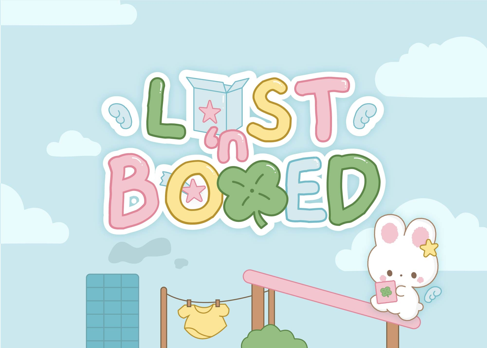
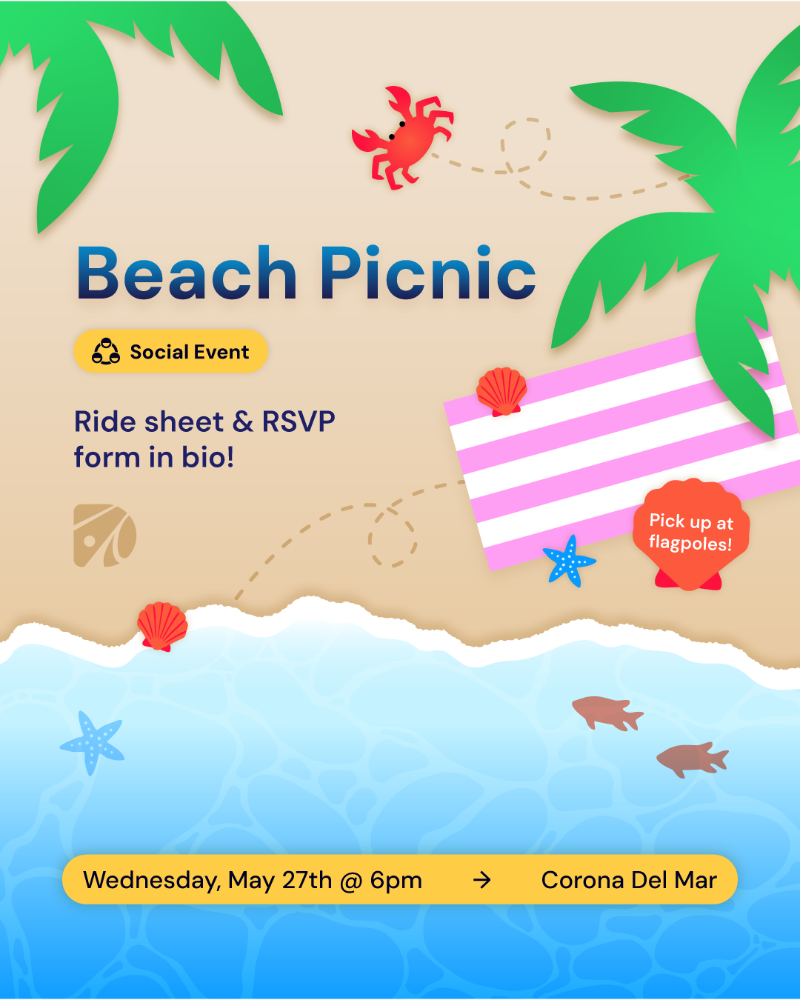
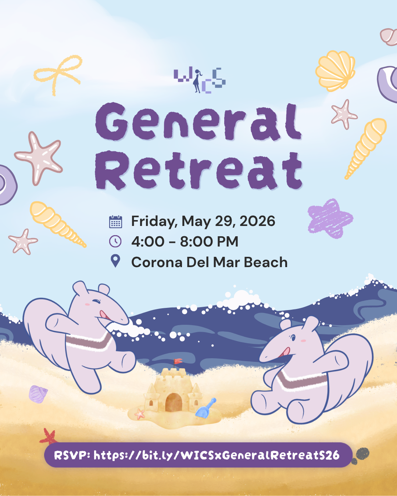
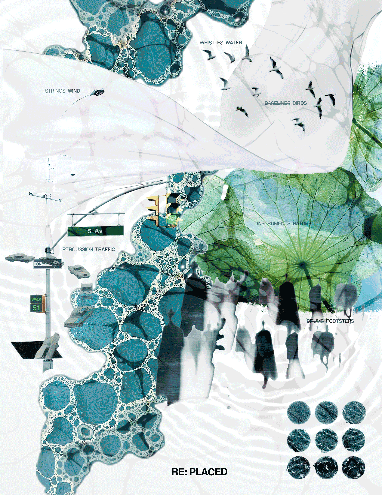
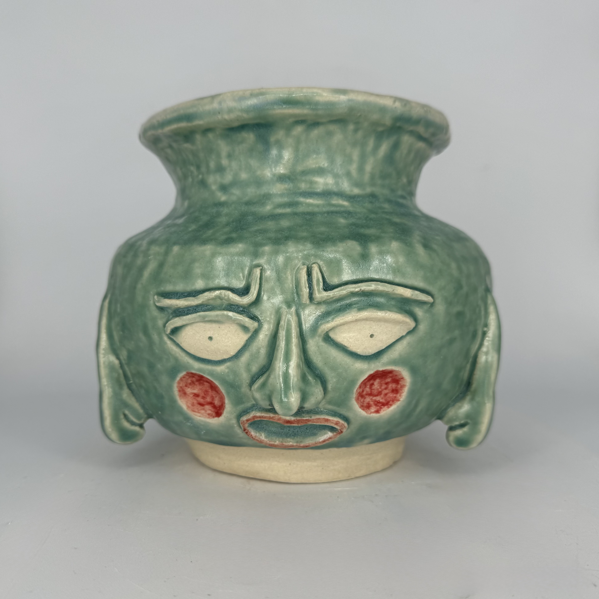

UI/UX
Yuda
A platform designed to connect OC college students with local volunteer opportunities
View app
UI/UX, graphic, game & character design, physical & digital!
UI/UX
A platform designed to connect OC college students with local volunteer opportunities
View app
Game & Character
A fast-paced game where players race to spot the odd one out across challenging levels.
View game
Graphic Design
Design@UCI Instagram Post:
Spring 26 Beach Picnic.

Graphic Design
WICS Instagram Post:
Spring 26 General Retreat.

Graphic Design
A layered GIF collage reimagining musical elements as everyday sounds.

Ceramics
Handmade clay face jug inspired by Dimple from manga & anime show Mob Psycho 100.